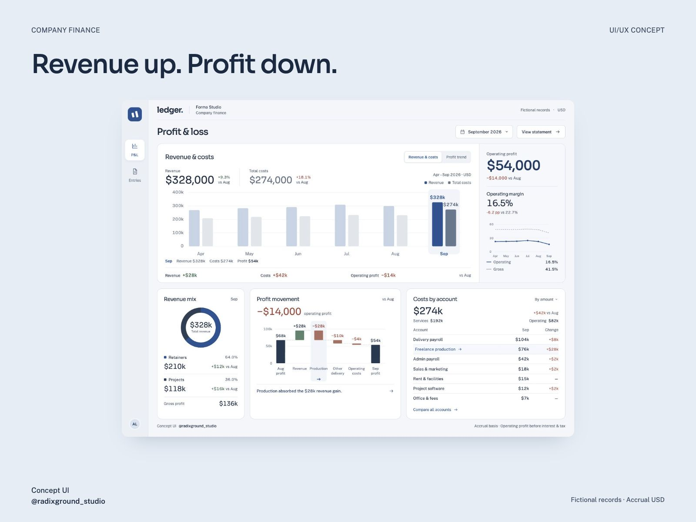

UI/UX Agent Harness
Turning design judgement into repeatable AI workflows

An agent harness that translates my UI/UX design judgement into reusable guidance for AI-assisted design and prototyping. Demos serve as test cases for refining the workflow and assessing how independently agents can carry it through.
The focus is not just on generating screens, but on making design decisions repeatable. References, design guidance and review criteria give agents a clearer basis for creating consistent interfaces and checking their outputs, with less hands-on intervention.
The workflow starts with task and reference research, then maps the user’s key decisions and interaction states before moving into UI components and a connected prototype. Agents review behaviour, responsive layouts and visual consistency, address issues, and produce the motion demo and showcase assets. My feedback informs further revisions, while recurring lessons are incorporated into the harness guidance for future runs.
Results: Produced demo prototypes and showcase assets within hours, with turnaround varying by the complexity of the user flows.